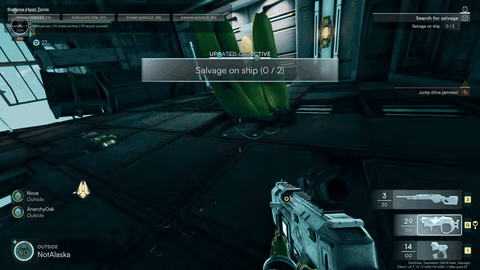
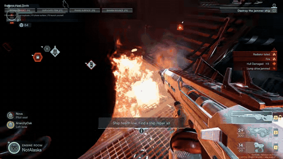
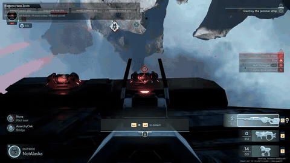

Jump Space review: giant bananas and jetpack boarding

The banana, blocking the corridor
Jump Space makes you and up to three others the crew of one spaceship. It is in Early Access and built around co-op missions with random elements. You crew it, step out for space walks, explore on foot, and scavenge parts to repair and upgrade the ship. There are no set classes.
There were three of us, and I ran the Banana Host Tools mod for almost the whole video. It sticks giant bananas on players, the ship and the corridors, and it lets me phase through walls and doors. Early on I clipped out of the hull into space, then the bananas blocked the corridors while I looked for the gunner seat. Fires broke out and the crew was defeated. Every time I got stuck, that was the mod. The game itself never crashed.
Fires broke out and I only made them worse. I shot one with my rifle and set myself on fire, and I found a Hull repair tool and never used it. Shooting a fire does not put it out. On another mission I shot at a fire and swung a heat blade, and I set the crew on fire too.
A cracked window and a Hull Damaged warning, with the Banana Host Tools menu top left

Shooting at a ship fire with a rifle, which does not put it out

An enemy jammer ship counting down to its self-destruct
I kept ditching our ship to board the enemy. I grappled onto a jammer ship and shot its weak points until it self-destructed. Radiation and thruster alarms went off on our ship, and I boarded a big enemy freighter anyway. It was the messy one: spider-bots and banana bunches blocking my view.
The jetpacking and the boarding fights were fun even with a banana in the way. I never found out how the ship plays without my mod, and the fire and repair side of the game barely got a fair try from me.